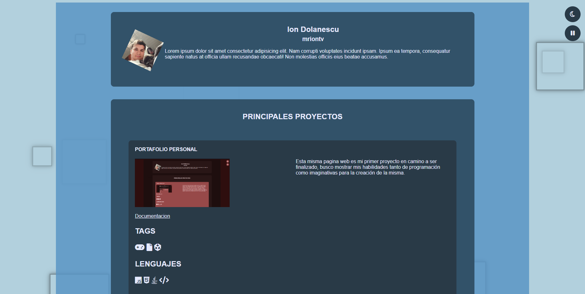

Principales Proyectos
Portafolio Personal

Esta misma pagina web es mi primer proyecto en camino a ser finalizado, busco mostrar
mis habilidades tanto de programación como imaginativas para la creación de la misma.
Cuenta con varias funcionalidades, como pausar la generación de figuras del fondo,
cambiar el tema de las paginas, secciones expandibles entre otros.
Documentacion
Contenido
Lenguajes